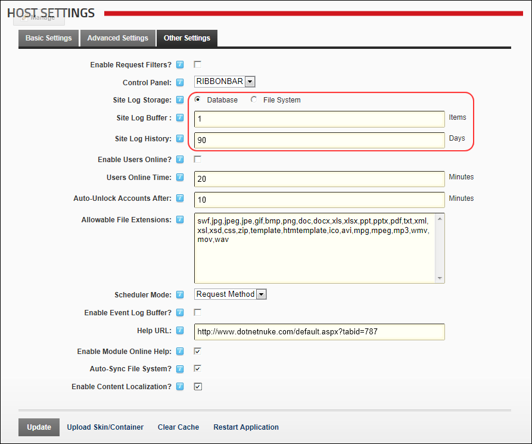

Configuring Site Log Settings for all Sites
How to configure the default settings for all Site Logs within this DNN installation. By default, the Site Log is unavailable on all sites and must be configured here to make it available.
- Navigate to Host >
 Host Settings.
Host Settings.
- Select the Other Settings tab.
- At Site Log Storage, select how site log files are stored from these options:
- Database: Select to store the Site Log data in the DNN database.
- File System: Select to store the Site Log data in the Website/Portals/PortalID/Logs folder on the server where your website is hosted.
- In the Site Log Buffer text box, enter the number of Items to buffer before sending them to the database. This field allows Site Log Events (e.g. Logins, Navigation, etc.) to be collected into a buffer before being sent to the database. By default this is set at 1 item, which means that the buffer will be sent to the database when it has one event in it. For example if the Site Log Buffer is set to 20 items, then 20 log events will need to occur before the buffer will be sent to the database.
- In the Site Log History text box, enter the default number of Days which the Site Log history is kept for. The default setting is zero ( 0 ) days which makes the site log unavailable to all sites.

-
Click the Update button.
Related Topics:
-
See "Editing Host Settings for a Site"